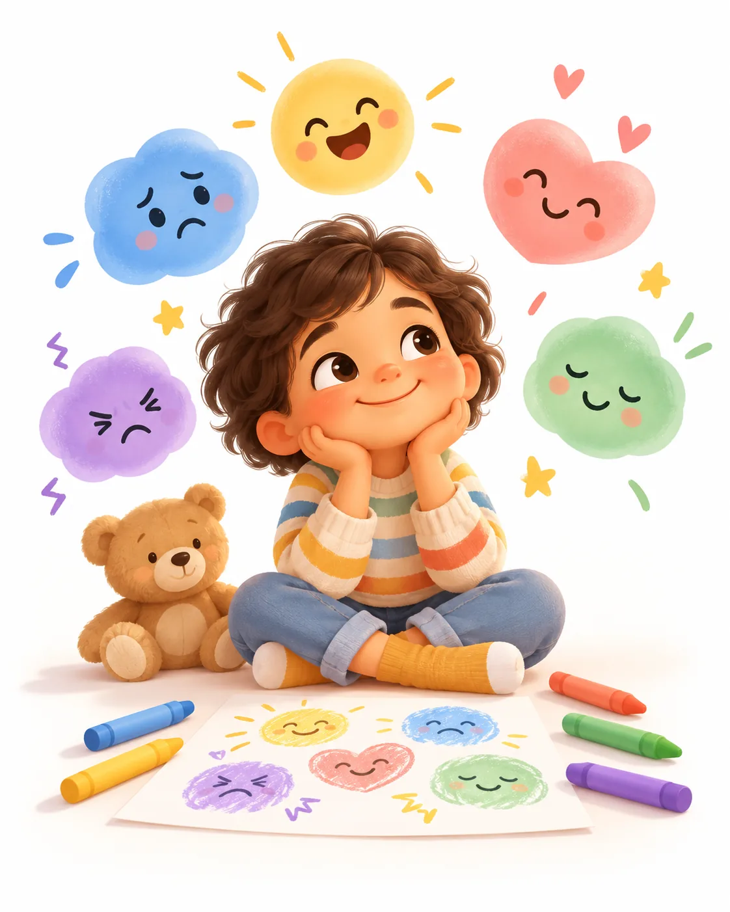
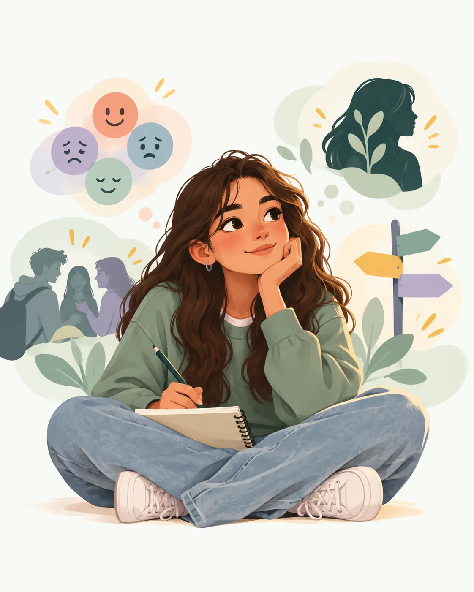

¿En qué momento estás creciendo?
Elige un rango. Cada etapa abre una ruta distinta para comprender cuerpo, pensamiento, emociones y relaciones.

En estos años el aprendizaje ocurre mucho a través del juego, la conversación, la imitación y las experiencias concretas. El …
Explorar esta etapa →
La vida escolar y las amistades ocupan cada vez más espacio. El niño puede hablar con mayor detalle de lo que le ocurre, comp…
Explorar esta etapa →
Para muchas personas esta etapa coincide con el inicio de cambios puberales y una mayor conciencia de cómo son vistas por los…
Explorar esta etapa →
La adolescencia media puede traer una combinación intensa de identidad, pertenencia, autonomía, emociones y decisiones. El pe…
Explorar esta etapa →
En estos años suele aumentar la orientación al futuro, la autonomía y la consolidación de valores e identidad. Aun así, plani…
Explorar esta etapa →